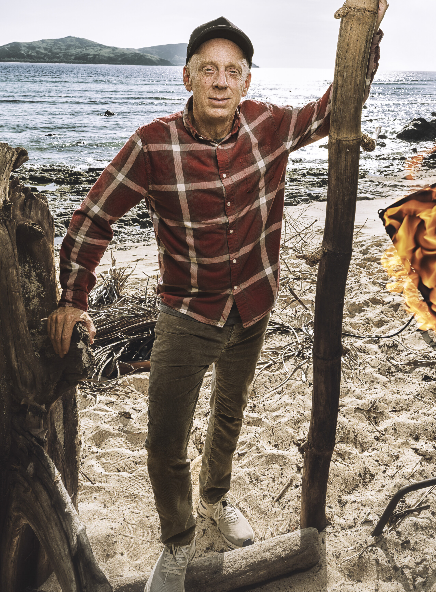

Mike White
Kalo Tribe
Age
54
Hometown
Pasadena, CA
Residence
Hanalei, HI
Occupation
Writer / Director
Previous Season
37 (David vs. Goliath)
Status
Active
Season 37 (David vs. Goliath)

Season 50
About
Mike White is perhaps best known outside of Survivor as the creator of HBO's The White Lotus. He previously played on David vs. Goliath (Season 37), where he took a laid-back, "goofball" approach to the game. His strategic philosophy centers on taking the back seat while letting others become bigger targets. His concept of "narrative warfare" has influenced other players, including his Season 37 castmate Christian Hubicki.